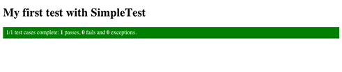
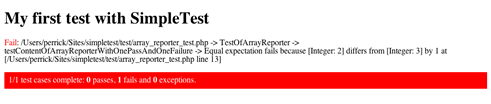
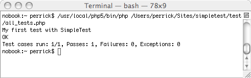

[2008/04/08] SimpleTest 1.0.1 is released. The last release that supports PHP4.2 up to PHP5.3 inclusive. Compared to the last stable release, the main significant change is the switch to autorun.
The SimpleTest PHP unit tester is available for download from your nearest SourceForge. It is a PHP unit test and web test framework. Users of JUnit will be familiar with most of the interface. The JWebUnit style functionality is more complete now. It has support for SSL, forms, frames, proxies and basic authentication. The idea is that common but fiddly PHP tasks, such as logging into a site, can be tested easily.
Screenshots
Here's what the result of your first test would look like :

Well not quite. In true TDD fashion, you should see a failing test case :

You may also prefer doing your testing with the command-line :

Documentation
While (still) very scattered around different sites, the SimpleTest documentation is quite dense and thorough.
- in english there's a tutorial and the official documentation.
- en français, il y a aussi le tutoriel et la documentation.
- a fully documented API is also generated with phpDocumentor.
Other type of interesting stuff while starting out with Test Driven Development and SimpleTest include :
- Article on Wikipedia
- Test Driven Development : article by Marcus Baker (SimpleTest leader)
- Introduction to SimpleTest and TDD : slides from a talk given at Fosdem, Brussels in 2005 by Perrick Penet
- Unit Testing in PHP using SimpleTest : article by Saleh Jamal
- How to write automated tests : in Drupal style (Module how-to's)
- Live TDD demo : transcript of a presentation in London in 2006 by Jason E. Sweat
A couple of books do use SimpleTest quite extensively :
-
PHP|Architect's Guide to PHP Design Patterns
by Jason E. Sweat
( PHP|Architect | Amazon ) -
The PHP Anthology: Object Oriented PHP Solutions
by Harry Fuecks
( SitePoint | Amazon | review on Slashdot )
Contributing
For translators the documentation is available in XML format : we're always please to add new languages to our code base.
And while we do try our best keeping this tool bug-free, detecting defects and submitting failing test cases and/or patches can come very handy ! Interested ? Drop by the mailing-list, most things tend to happen there...